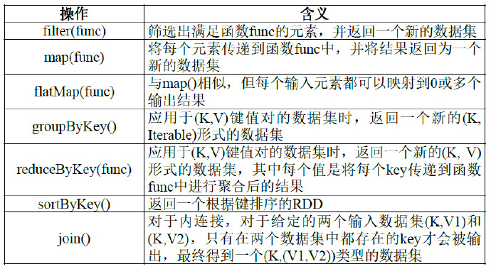
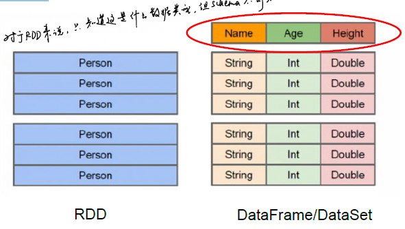
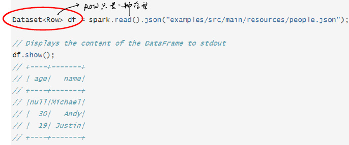
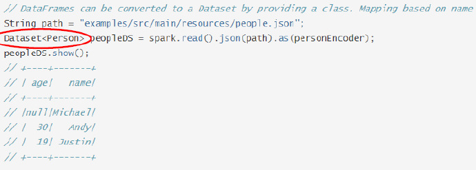
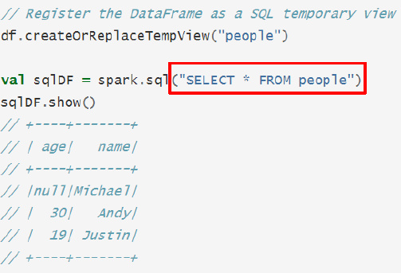
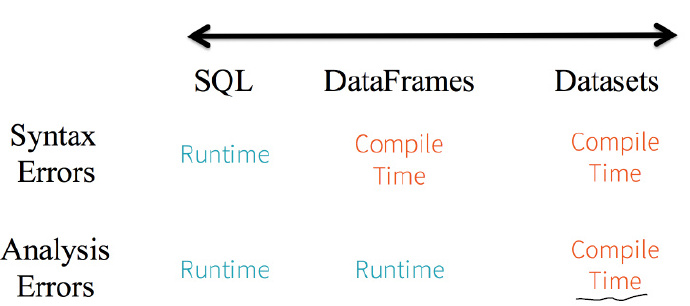

Spark shell
- Spark Shell 提供了简单的方式来学习Spark API
- Spark Shell可以以实时、交互的方式来分析数据
- Spark Shell支持Scala和Python
- 一个Driver就包括main方法和分布式数据集
- Spark Shell本身就是一个Driver，里面已经包含了main方法
Spark RDD
RDD操作
RDD创建
从文件系统中加载数据创建RDD，并指定分区的个数
- 本地文件系统
- HDFS
- 其它
通过并行集合（数组）创建RDD
- 可以将本地的Java对象变为RDD
创建RDD时手动指定分区个数
在调用textFile()和parallelize()方法的时候手动指定分区个数即可，语法格式如下：
sc.textFile(path, partitionNum)
其中，path参数用于指定要加载的文件的地址，partitionNum参数用于指定分区个数。
RDD Transformation

RDD Repartition
- 通过转换操作得到新RDD 时，直接调用repartition 方法或自定义分区方法
- 什么使用用到该方法？
- 当遇到某些操作，如
join，则可将宽依赖Partition之后变为窄依赖，便于pipeline执行
- 当遇到某些操作，如
RDD Action
- 惰性机制：整个转换过程只是记录了转换的轨迹，并不会发生真正的计算，只有遇到action操作时，才会发生真正的计算，开始从血缘关系源头开始，进行物理的转换操作操
RDD保存
- RDD写入到本地文本文件
- RDD中的数据保存到HDFS文件中
Spark SQL
- Spark SQL增加了DataFrame（即带有Schema信息的RDD），使用户可以在Spark SQL中执行SQL语句，数据既可以来自RDD，也可以是Hive、HDFS、Cassandra等外部数据源，还可以是JSON格式的数据
- Spark SQL目前支持Scala、Java、Python三种语言，支持SQL-92规范
Schema
- RDD的局限性：RDD是分布式Java对象的集合，但是对象内部结构，即数据Schema不可知
- 
DataFrame
- 无论读取什么数据，都写成
DataSet<Row>- 
DataSet
- 相比DataFrame，DataSet明确声明类型
- 
- 在源码中，可以将DataFrame理解为
DataSet<Row>的别名 - 若查询语句中有一列不存在，则可以在编译时检查出来
SQL Query
- sql(“”)括号中的SQL语句对于该函数来说仅仅是一条字符串
- 
- 编译时不会进行任何语法检查
比较
